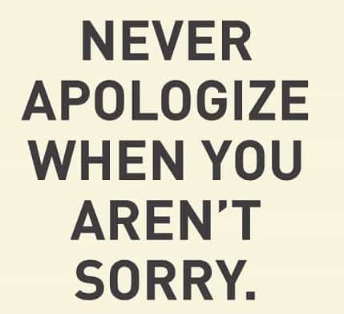

is an aspiring philosopher king, living the dream, travelling the world, hoarding FRNs and ignoring Americunts. He is a European at heart, lover of Latinas, and currently residing in the USA.


In an earlier article, I examined the sexual groping hysteria of 2018. This week we examine the repercussions of the allegations and possible reasons behind the media conspiracy to make this a national issue.
I have been struggling to understand the reasons for the #MeToo movement gaining speed. Outrage is certainly manufactured, and someone has decided this story will be given lots of media attention.
Is it politicians coddling females and their allies, who together could make up a majority of voters? Is it a tool to control powerful men? Is it someone with a damaging (((agenda))) sabotaging our society?
Predictably, the claims have weakened. I have yet to hear a serious #MeToo claim that shocks me, or one that calls for the man in question to be imprisoned, or really anything worse than slapped and called a pig by the supposed victim. Indeed, I have suffered more by merely taking a plane flight at the hands of the TSA gropers.
Professional Eye-Raper
The latest claims include a complaint that Morgan Freeman looked at a girl’s breasts while he was talking to her at a party, twice requested women in his office to twirl around so he could eye rape them from behind, and one male (presumably gay) actor heard Freeman remark “I’d like to have an hour with her” in reference to an attractive female.
CRUCIFY HIM! He shall never work again. Hollywood is for fags and trannies only!
Chris Hardwick, a nerdy standup comedian and TV actor, had his AMC series cancelled, was erased from the Nerdist website he created, and fired from moderating the Comic-Con convention because a former girlfriend from several years ago made a vague statement that one of her anonymous exes was abusive to her.
TV Actor Chris Hardwick once dated an unstable woman, and must be fired
What was the crime that this unnamed boyfriend, who could be any one of dozens of men this female has dated, committed? He “established rules” for her behavior, including:
A supposed sexual assault occurred because she “went along with it out of fear of losing him” when they had sex, but now regrets it.
Yes, because this woman had typical relationship conditions imposed, and now regrets having sex with an unnamed man, her most famous ex Chris Hardwick must be fired and never work again.
A woman in need of rules if I’ve ever seen one
I was able to easily find topless photos of this girl, including pictures of her with Hardwick with her ass visible in public, so something tells me her behavior was not very restrained. Nonetheless, even if such claims were true, the rules are completely reasonable and indeed I typically impose them on girls I am dating.
I guess by admitting that, any one of my exes who goes on to date a famous person can now have him fired by publicly reminiscing about our relationship. Apologies to all remaining heterosexual male actors.
Now to the bigger question: why are we seeing such absurd claims become national news?
Most men have sex drives, particularly driven, successful, and prominent men who often have type A personalities and larger-than-life personas. Prior to becoming President, Donald Trump was known for his aggressive if not insulting behavior towards his workers on his TV show The Apprentice. Often the most flamboyant and extroverted men, from Mick Jagger to JFK to Wilt Chamberlain, have sex drives to match.
What is more attractive to the elite than having a natural tool that can automatically control all these men? Simply turn legal sexual behaviors into weapons that are more powerful than the law itself, and you have a way of controlling every powerful man on the planet.
In many US states the penalty for sexual battery is up to one year in jail. The penalty for legally making a woman feel uncomfortable is far greater than committing an actual crime. I can’t help but think of the irony of the ROK rape hysteria. Men could receive lighter punishments if they criminally assault a woman than if they flirt and fail.
Is this really the message society wants to send?
Men like Louis CK must give up their comedy careers, have TV and film projects cancelled, and face a boycott from major brands and entertainment companies. Men like Steve Wynn must resign their post, and face financial repercussions in their industry. Al Franken must resign his career as a US Senator because his hands almost touched a woman’s clothed chest in a photo.
This blonde is a genius by today’s standards
Former Baywatch Babe Pamela Anderson was one of the few who called out the absurdity of these claims. Anderson, who was predictably attacked for “victim blaming” stated that:
You know what you’re getting in to if you go to a hotel room, alone.
She also gives out some common sense advice to not accept rides from strangers or go to auditions alone. Well, of course.
My first reaction when I hear a claim like “He touched my butt in 1984” is “Really? Is that the last time your butt was touched?”
Donald Trump made the factual statement that women are so attracted to powerful men that they let them do almost anything, including grabbing them by the pussy. But he did not back down or apologize from that statement. And despite all the wailing and grinding of teeth and “I literally can’t evens” he managed to win not only the presidency but the majority of votes of white women.
Ohio Supreme Court Justice Bill O’Neill displays a normal and healthy attitude towards women
The simple act of not feeling shame or apologizing removes all the power from the “offended” class. While most of the #MeToo stories are lawful interactions, grabbing a woman publicly by her privates could be considered illegal, yet Trump is nevertheless untouchable because he maintains frame. You know this has to keep the cucked unemployed apologizers up at night.

On the other hand, every single man who has apologized for making a woman feel uncomfortable has ended up fired and permanently ostracized. As Vox Day stated, never apologize to SJWs. It has benefited NONE of these men in any way.
Love him or not, Louis CK has told some funny jokes in his time. It does not appear that he will ever publicly joke again. It doesn’t matter if he had the ability to make millions laugh. If he made one single female briefly uncomfortable, he must go away forever.
It cannot be stressed enough that the punishments meted out by the elites are more severe than almost ANY found in our penal system, even some types of killers are eligible to be released from prison and find employment, but the punishment for flirting is permanent inability to work in your field of choice.

Matt Lauer hosted the Today show for over 20 years. Because he made a woman uncomfortable, he can no longer be a newscaster. While Lauer may be unprofessional, perverted, awkward, or rude, there are many corrective actions taken short of ending his career as a journalist. The punishment should fit the crime. As a journalist, it is far more important that one has integrity and honesty. When Brian Williams, who has been caught lying multiple times, still has his job as chief anchor, but Matt Lauer is fired and disgraced, something is amiss.
Kentucky Cuckinator Matt Bevin
Kentucky Governor Matt Bevin recently called for any lawmaker in his state who has settled a sexual harassment claim to quit, exclaiming
These allegations are, as I have said, reprehensible, they’re indefensible, they’re unacceptable. Period.
Really? Allegations are indefensible?
While some of these actions are unacceptable ways for men to behave, and some may even constitute criminal behavior, I have struggled with understanding the reason they are made into national news stories. Any time media has a coordinated message, you can be sure there is a propaganda purpose at play. Whether it is fearmongering about North Korea, easing the public into supporting the Gulf Wars, or pretending that gay marriage and trannys are major issues that deserve our attention, there are propaganda aims and distractions at work.
I see two possible goals.
One is to control and blackmail the powerful. Almost every man has made a pass at a woman that was rejected. In order to test limits, guys push the envelope to see what they can get away with. When the modern woman is accepting defecation as a first date activity, it’s not unreasonable to try early physical escalation. Any man who has tried this and been rejected or made a woman uncomfortable is now open to termination of his career. This is an extremely powerful tool which can be used to blackmail, or simply physically remove someone who is an obstacle.
The second is to shame masculine behavior and further a gynocentric culture. Young men, who are already being exposed to ideas that their testosterone is inherently “toxic” and that they must obtain affirmative consent before proceeding sexually with a woman, will be afraid to escalate, touch, or even look at, women. One American college has already threatened men with expulsion if they dare to whistle at a woman. Men already are afraid to compliment, hug, or approach women.
When the possible result of making a woman uncomfortable is permanent exclusion from your career field and universal condemnation, many will further avoid marriage, family, and sexual relations altogether. At the risk of sounding hyperbolic, I believe many more men will become gay or transsexual.
The end goal is vague; however, Western civilization was built under a strong patriarchy with slut shaming, a class and moral system, and institutions which encouraged ethical behavior. By removing men from positions of power and replacing them with women and gays, the culture is fundamentally and permanently changed.
Read More: 5 Ways the Modern Rape Hysteria Resembles Stalin’s Great Terror
{kind=link}